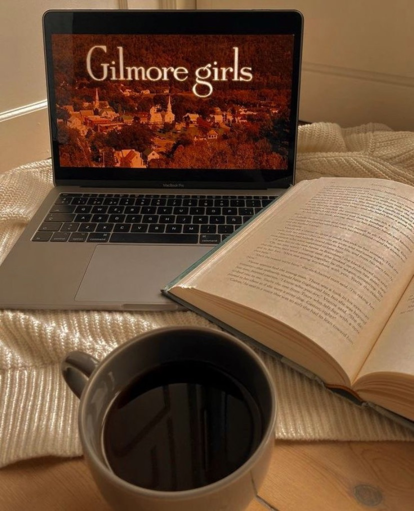
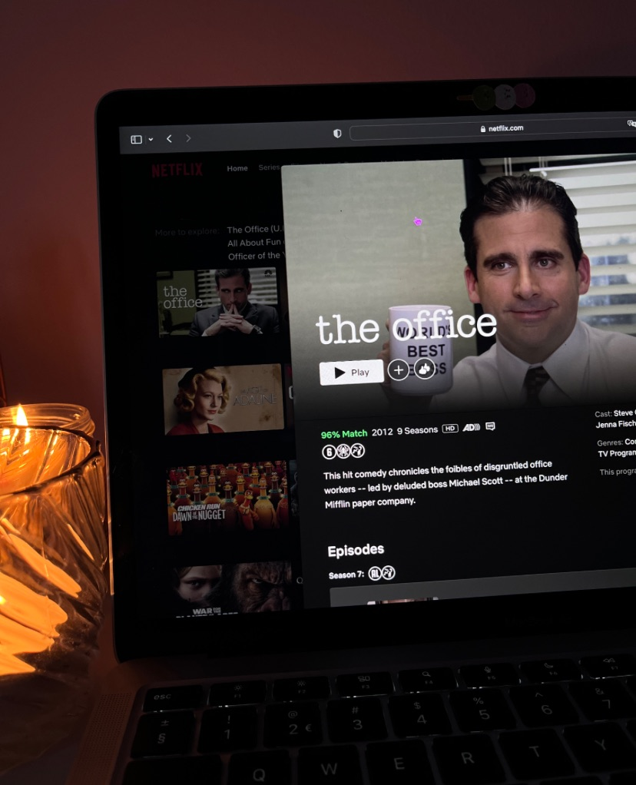
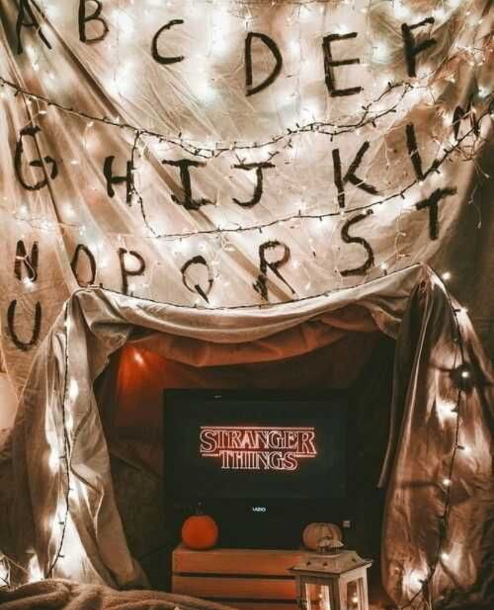
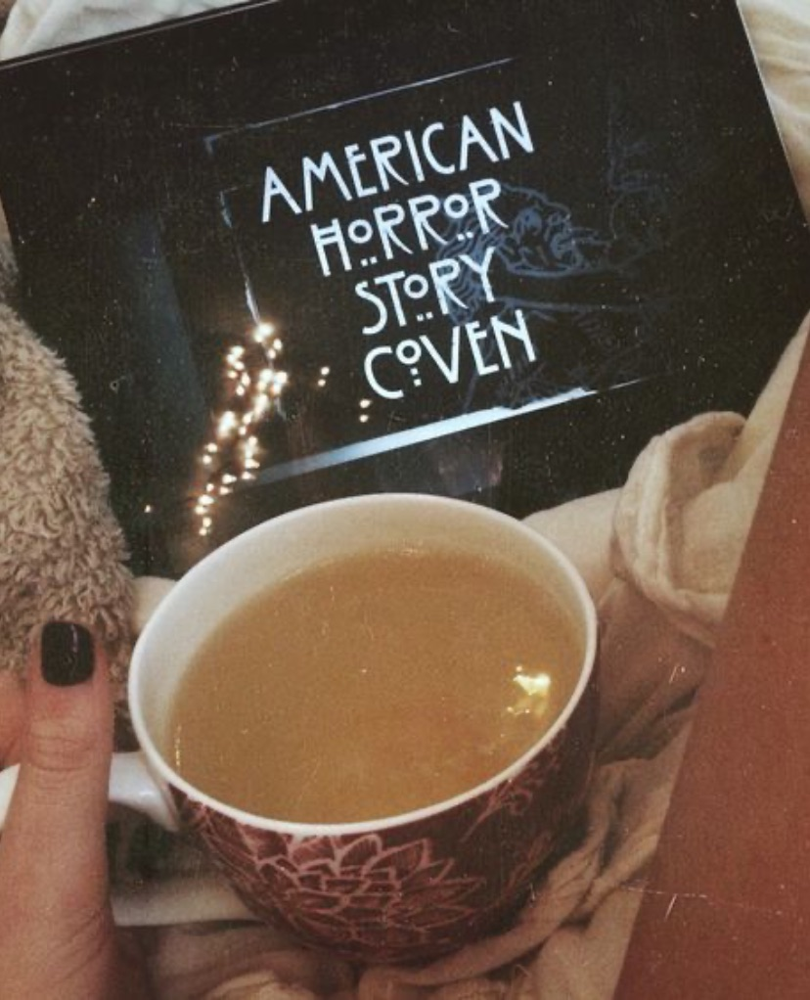
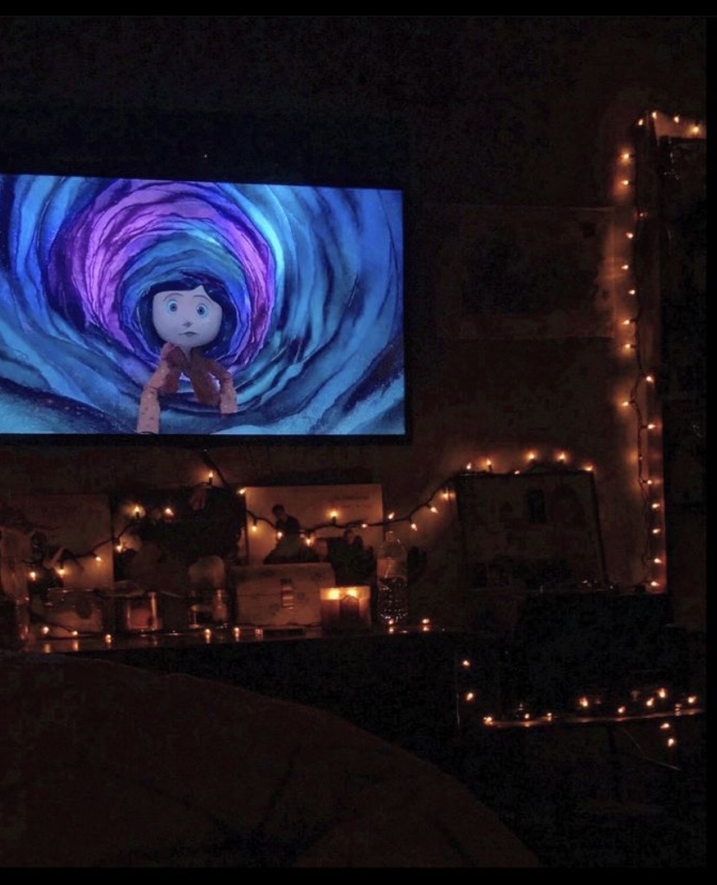
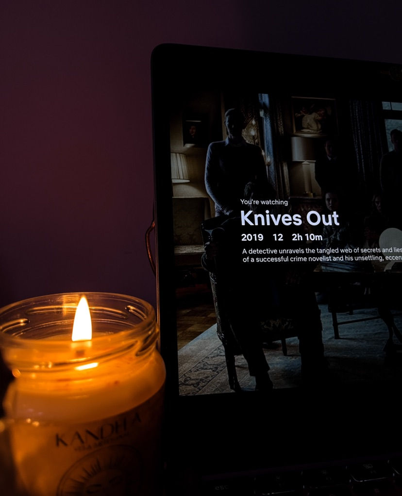
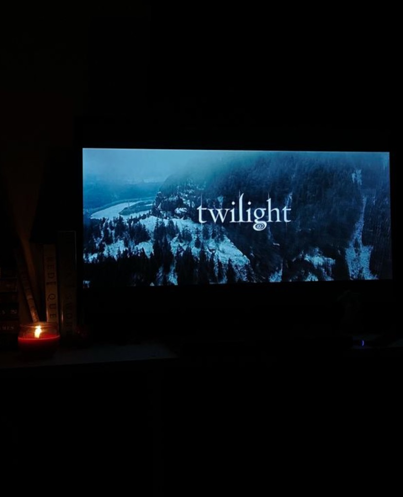
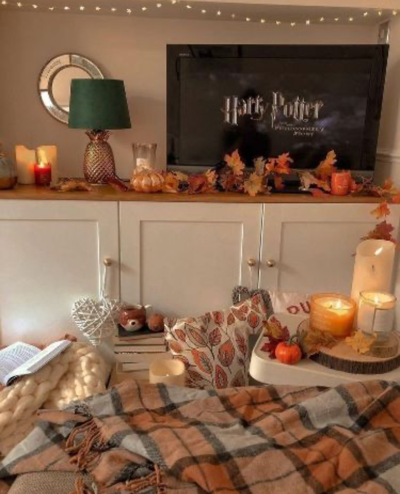

Hot Girl Herfst || Series & Films
Op deze pagina delen we de beste tips over series en films die je dit seizoen absoluut niet mag missen. Dompel jezelf onder in de meest betoverende verhalen en laat je meevoeren door het magische herfstseizoen.
Series
- - Gilmore Girls betovert kijkers met de warme en levendige band tussen Lorelai en Rory Gilmore in het mooie Stars Hollow. Te midden van de herfstpracht komt deze feelgood-serie tot leven met gezellige koffiemomenten, kleurrijke herfstbladeren en betoverende verhalen over liefde, vriendschap en familie. Het is de perfecte serie om je in de herfstachtige sfeer te dompelen! 
- - The Office volgt de komische gebeurtenissen in het alledaagse kantoorleven van Dunder Mifflin, waar de eigenzinnige medewerkers onder leiding van de klungelige manager Michael Scott voor humor en onverwachte situaties zorgen. Temidden van de herfstachtige sfeer biedt deze serie niet alleen grappige momenten, maar ook een warm gevoel van verbondenheid, waardoor het de perfecte keuze is voor ontspannen herfstavonden. 
- - Stranger Things neemt kijkers mee op een bovennatuurlijk avontuur in het kleine stadje Hawkins, waar een groep kinderen geconfronteerd wordt met mysterieuze krachten en buitenaardse verschijnselen. De herfstige setting voegt een extra dosis spanning toe aan de serie, met betoverende bossen en mysterieuze mist, waardoor het de perfecte herfstbinger is voor liefhebbers van spanning en avontuur! 
- - American Horror Story is een meeslepende anthologieserie die elk seizoen een nieuw en angstaanjagend verhaal vertelt, variërend van bovennatuurlijke verschijnselen tot duistere samenzweringen. Terwijl de herfstbladeren vallen, brengt deze bekroonde serie niet alleen rillingen over de rug, maar voegt het ook een extra vleugje mysterie toe aan de herfstavonden, waardoor het de perfecte keuze is voor liefhebbers van spannend en onvoorspelbaar entertainment. 
Films
- - Coraline is een betoverende animatiefilm over een avontuurlijk meisje dat een geheime deur ontdekt in haar nieuwe huis, waardoor ze terechtkomt in een mysterieuze wereld met alternatieve versies van haar eigen leven - een perfecte mix van spanning en fantasie. Door de kleurrijke omgevingen en het thema van transformatie is deze film perfect voor een herfstdag. 
- - Knives Out is een briljante moordmysterie film waarin een knap samengestelde familie samen komt op de sinistere herfstdagen en de chaos begint wanneer een beroemde detective de zaak overneemt om de waarheid te ontrafelen, allemaal doordrenkt met de heerlijke herfstsfeer van mysterie en intriges. Bereid je voor op deze pakkende film die je zeker op het puntje van je stoel zal houden terwijl de bonte herfstbladeren buiten dwarrelen. 
- - Twilight is een betoverend liefdesverhaal dat zich afspeelt in het schilderachtige stadje Forks, waar de herfst de perfecte achtergrond vormt voor deze mysterieuze romance. De film vertelt het verhaal van de charmante vampier Edward Cullen en de town-newbie Bella Swan, wiens liefde wordt getest door duistere bovennatuurlijke krachten. De herfstige sfeer en de prachtig veranderende kleuren van de bladeren dragen bij aan de betovering van deze film en maken het een absolute must-see voor de herfstliefhebbers onder ons. 
- - Harry Potter is een magische filmreeks over een jongen die ontdekt dat hij een tovenaar is en zijn avonturen op Zweinstein, de school voor hekserij en toverkunst. Met betoverende herfstachtige kleuren en prachtige herfstfestivals, brengt de wereld van Harry Potter juist in dit seizoen een extra dosis magie met zich mee! 